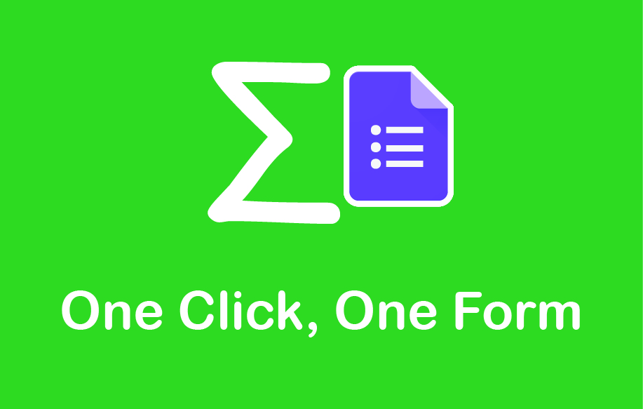

Sigma's Privacy Policy
Your privacy is important. Afterall, this app would be nothing without its users. We wish to be as transparent as possible with how your data is used when you use Sigma as your Spreadsheet Add-on.
What Information is Collected?
Nothing. The script runs locally on the user’s machine and no information is ever saved throughout this process.
The information on the Spreadsheet is parsed through the script and regurgitated onto a Google Form. There is
no third-party that collects data during this process or sees what is on your Form.
Although some of the scopes seem questionable (i.e. “See, edit, create, and delete all of your
Google Drive files”), this is because there are no lower permission alternatives. The option for the developer is
essentially either "do you want a Google Form" or "nothing works." Elaborating on the given example, the script only
places the Google Forms in a specified folder if told specifically. For the technically savvy people, you will find that
the only times the script ever references a "delete-something" method is when the script needs to delete extra rows/columns
when initializing the Speadsheet.
tldr; the Spreadsheet only accesses the data given and nothing is collected during this process
How is the data used?
Information on the Spreadsheet is used to create Google Forms. By parsing the information on the Google Sheets,
the script is able to create the desired Google Form. As mentioned before, there is no keeping of user data throughout this process.
This means that the data is only used for creating Google Forms and nothing else.
tldr; the Spreadsheet can only use the given information because nothing is stored through the script
What information is shared?
Your data is safe from being shared, as nothing is ever collected with the add-on.
tldr; data is not stored, which means no information can be shared
Contact Us
If you have any questions regarding the Privacy Policy or the script, please email the main developer at michael.li.web@gmail.com